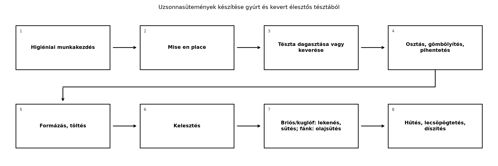

A cukrászüzemben a reggeli nyitás előtt a briósok és kuglófok édes, vajas illata jelzi a vendégeknek, hogy friss, kelt tésztás készítmény várja őket. A farsangi időszakban a fánk a legkeresettebb. Ha a fánk olajos, a kuglóf sűrű, a briós pedig száraz és törő, a vendég nem egyszeri vásárló lesz. A gyúrt és kevert élesztős uzsonnasütemények közös alapja az élesztő működése, a helyes kelesztés és a termékre szabott hőkezelés. Ebben az alfejezetben a briós- és kuglófféléket, valamint a fánkot dolgozzuk fel úgy, hogy a műveleti sorrend, a tömegszámítás és a forró olajos sütés biztonsági rendje is a helyére kerüljön.
A briós, a kuglóf és a fánk műveletrendje egy közös gerincre fűzhető fel: a kelt tésztát először dagasztjuk vagy keverjük, majd osztjuk, gömbölyítjük és pihentetjük. Ezután a termék alakjától függően formázzuk, töltjük, kelesztjük, végül hőkezeljük. A brióst és a kuglófot sütőben sütjük, a fánkot pedig forró olajban. Az alábbi folyamatábra a három termék közös műveletrendjét mutatja.

Definíció. A briós gyúrt élesztős tészta, amely a szokásos kelt tésztánál több tojást és zsiradékot, valamint cukrot tartalmaz. A magas zsiradék- és tojástartalom miatt a tésztája puha, finom, de a formázáshoz jól kidolgozott sikérvázra van szükség. A brióst tölthetjük lekvárral, diós vagy mákos töltelékkel, de készíthetjük töltetlenül is.
Definíció. A kuglóf kevert élesztős tészta, amely lágyabb, kevésbé gyúrható, ezért kuglófformában sütjük. A formába töltés előtt a tésztát csak egyszerűen a formába adagoljuk, és a kelesztési időt a forma háromnegyedéig való felérésig figyeljük.
Definíció. A szalagos farsangi fánk kevert élesztős tészta, amelyet kinyújtva, fánkszúróval szúrva, kelesztés után forró olajban sütünk. A fánk jellegzetessége a középen futó világos „szalag”: ez azért alakul ki, mert a jól megkelt, könnyű fánk úszik az olajon, és egyszerre csak az egyik fele merül bele: előbb az alsó, a fordítás után a felső fele sül. A két sütési szakasz közötti, az olaj fölött maradó sáv lesz a világos szalag; ezért kell a fánknak elég könnyűnek (jól kelesztettnek) lennie, és ezért fordítjuk csak egyszer.
Szabály. A briós és kuglóf sütésénél a tészta maghőmérsékletének élelmiszer-biztonsági minimuma tanulási célként legalább 75 °C, a sütöttséget élesztős tésztánál kb. 92–96 °C-os maghőmérséklet jelzi (ellenőrizendő: recept és üzemi utasítás; ugyanez az érték szerepel az Az uzsonnasütemények jellemzői és műveletei alfejezetben). Ezzel biztosítjuk, hogy a tészta belseje is átsült, és a tojás, tej hőkezelése élelmiszerbiztonsági szempontból is megtörtént.
Szabály. A fánk sütéséhez használt olaj hőmérsékletét 170–180 °C között tartjuk (ellenőrizendő: NÉBIH útmutató és gyártói adatlap). Ennél alacsonyabb hőfokon a fánk sok olajat szív fel, magasabb hőmérsékleten kívül megég, belül nyers marad.
A briós tésztát a korábbi alfejezetben tanult gyúrt élesztős tészta alapján készítjük, de a zsiradékot és a tojást magasabb arányban adagoljuk. A tésztát teljesen kidagasztjuk, hogy sikérváza kialakuljon. Ezután az alábbi lépések következnek:
A fejes briós formázását az alábbi képsor mutatja: a nagy gömb közepébe a bordázott formában ujjal mélyedést nyomunk, abba illesztjük a csepp alakúra sodort kis gömböt, majd kelesztés után lekenjük és sütjük.
A briós tipikus töltelékei a lekvár, a dió- vagy máktöltelék, a főzött vaníliakrém (crème pâtissière) és a cukros túró. A töltelék legfeljebb a nyers tészta tömegének 20–25 %-a legyen, mert a sok töltelék kifolyhat, és a tészta nem tudja megtartani a formáját.
A szalagos fánk sütésének menetét és a biztonságos olajsütő munkahelyet az alábbi képsor mutatja: szúrás, kelesztés, olajba helyezés a felső felével lefelé, sütés, egyszeri fordítás, a kész fánk világos szalaggal; az utolsó kép felülnézetben a hőmérőt, a kéznél lévő fedőt, a víztől mentes környezetet és a befelé fordított nyelet jelöli (égő olajat vízzel oltani tilos).
Allergének. A briós, kuglóf és fánk glutént, tojást, tejet tartalmaz. Töltés esetén diófélék, mogyoró, mák is előfordulhat. A közös eszközökkel történő előállítás során keresztszennyeződés is kialakulhat, ezért allergén-szempontból a tisztítás és a külön tárolás kiemelten fontos.
Példa 1: Briós recept átszámítása 40 db-ról 60 db-ra
Egy tanulási recept 40 db töltetlen brióshoz a következő anyaghányadot adja:
| Nyersanyag | Mennyiség (g) | Megjegyzés |
|---|---|---|
| Finomliszt | 1000 | BL 55 |
| Vaj | 200 | puha |
| Kristálycukor | 120 | |
| Só | 15 | |
| Friss élesztő | 40 | |
| Tojás | 300 | kb. 6 db közepes |
| Tej | 250 | langyos |
| Összes tészta | 1925 |
A 40 db-os receptből szeretnénk 60 db-ot készíteni. A szorzószám:
Minden nyersanyag tömegét ezzel a szorzószámmal számítjuk át:
és így tovább. Az ellenőrzés: . A kerekítésnél a tömegmérés pontosságát (1 g) használjuk.
Példa 2: Fánkszám és olajfelvétel becslése
Egy fánktészta receptje 35 db fánkot ad, darabonként 50 g nyers tésztával. A sütés során minden fánk tanulási adat szerint átlagosan 8 g olajat szív fel (ellenőrizendő: gyártói adatlap és üzemi mérés). Mennyi olajat kell betervezni 35 db fánkhoz?
A fánkok száma: , az egy fánkra jutó olajfelvétel . A teljes olajfelvétel:
A sütőből fogyó olaj nagyrészt a fánkba szívódó olaj; ehhez jön a párolgási és kezelési veszteség, amelynek tanulási becslése a felvétel 10–20%-a, vagyis kb. 30–60 g (ellenőrizendő: üzemi mérés). Így a pótlandó olaj:
A gyakorlati tapasztalati pótlási érték (200–300 g olaj 1 kg fánkhoz) felső becslés: 35 db 50 g-os fánk kb. 1,75 kg tészta, így . A két becslés ezért 0,3–0,45 kg közötti tartományt ad; a sütőedény eredeti feltöltése (az olaj kezdeti mennyisége) ezen felül van, és nem a fánkonkénti pótlás része.
Jogszabály. A 852/2004/EK rendelet szerint az élelmiszer-higiénia minden lépésben elsőbbséget élvez: a tojást és tejet tartalmazó nyers tésztákat hűtve kell tárolni, a sütés pedig a mikrobák elpusztításához elégséges hőkezelést kell, hogy biztosítson. A kész termékeket gyorsan le kell hűteni, és hűtve vagy a helyi utasítás szerint kell tárolni.
Jogszabály. A fogyasztók tájékoztatásáról szóló 1169/2011/EU rendelet alapján a briós, kuglóf és fánk alapvető allergénjei a glutén, a tojás és a tej. Töltött változatnál a dióféléket, mogyorót, szezámmagot is jelölni kell. A 14 jelölendő allergéncsoportot a teljes termékre vonatkozóan kell feltüntetni.
Jogszabály. A sütőolaj használatára az akrilamid-csökkentő intézkedésekről szóló 2017/2158/EU rendelet és a NÉBIH útmutatói vonatkoznak (ellenőrizendő: hatályos referenciaértékek). A fánk sütésénél kerülni kell a túl sötétre sütést, az olaj minőségét rendszeresen ellenőrizni kell, és a megégett, habos, erősen szennyezett olajat cserélni kell.
A tanuló készítsen el egy adag szalagos farsangi fánkot, dokumentálja a sütőolaj hőmérsékletét, és gyakorolja a forró olajos munkavégzés biztonsági szabályait.
Keverőtál vagy dagasztógép (keverőfej), kézi habverő, liszt, élesztő, tej, tojás, cukor, só, vaj, fánkszúró, nyújtódeszka, olajsütő vagy vastag aljú lábas, digitális maghőmérő, tészta hőmérő, szűrőkanál, rács, papírtörlő, porcukor.
Tiszta munkaruha, hajháló, ékszer le, kézmosás szappannal. A munkafelületeket fertőtlenítjük. Az alapanyagokat ellenőrizzük: a tojás nem repedt, a tej hűtött, az élesztő friss. A liszt és a segédanyagok tároló edényei tiszták.
Biztonsági korlát. A forró olajjal végzett munka tanműhelyi vagy üzemi környezetben, oktatás után és felügyelet mellett végezhető; otthon háztartási edényben, kis adagban gyakorolj. Az olajsütő mellett mindig legyen fedő, tűzoltó takaró vagy F osztályú tűzoltó készülék. A víz használata a forró olajra tilos.
Technológiai lap.
Termék neve, termékcsoport, alapmennyiség: Szalagos farsangi fánk, kevert élesztős tészta, 35 db (50 g/db nyers tészta).
Anyaghányad táblázatban, összesítő sorral; a feltüntetett mennyiségek nettó értékek:
| Nyersanyag | Mennyiség (g) | Megjegyzés |
|---|---|---|
| Finomliszt | 1000 | BL 55 |
| Friss élesztő | 50 | |
| Kristálycukor | 80 | |
| Só | 12 | |
| Tojás | 250 | kb. 5 db közepes |
| Tej | 300 | langyos |
| Vaj | 100 | olvasztott |
| Citromhéj | 5 | reszelt |
| Összes tészta | 1797 |
Eszközök és gépek: keverőtál, dagasztógép (keverőfej), nyújtódeszka, fánkszúró, olajsütő, hőmérő, szűrőkanál, rács.
Műveleti sorrend:
Kritikus pontok és technológiai kulcspontok: a tojásos-tejes tészta hűtve tartása; a sütés hőmérsékletének ellenőrzése; az olaj minőségének monitorozása; a fánk maghőmérsékletének elérése (biztonsági minimum legalább 75 °C, sütöttségi jel kb. 92–96 °C) (ellenőrizendő: üzemi utasítás); az olaj hőmérséklet túllépésének elkerülése.
Allergének: glutén (búzaliszt), tojás, tej. A sütőolajban lévő szennyeződések miatt keresztszennyeződés lehetséges más allergénekkel is.
Minőségi jellemzők: szabályos kerek forma, aranybarna szín, látható világos szalag, egyenletes, laza, nem tömör bélzet, kellemes édes-vajas illat, nem olajos íz.
Tárolás, eltarthatóság: a fánk frissen fogyasztva a legjobb; hűtve 1 napig tárolható, de a szalag elvész. Az olajat lehűlés után leszűrjük, és dokumentálva tároljuk (ellenőrizendő: üzemi utasítás).
Kritikus pont. A fánk sütésének HACCP szempontból kritikus pontja a hőkezelés: az olaj hőmérsékletét és a sütési időt folyamatosan ellenőrizni kell, hogy a tészta átsüljön. Ha az olaj hőmérséklete 170 °C alá esik, a fánk sok olajat szív fel, és a belseje nem sül át. Ilyenkor a sütést szüneteltetjük, a hőforrást feljebb állítjuk, egyszerre kevesebb fánkot teszünk be, és 170 °C elérése után folytatjuk; az olajos, szalag nélküli fánk minőségi selejt, ha pedig a belseje nem sült át (a maghőmérséklet nem érte el a biztonsági minimumot), élelmiszer-biztonsági okból is selejt. Ha a hőmérséklet 180 °C fölé emelkedik, a sütőt le kell venni, és az olajat hűlni hagyni.
A briós és kuglóf minőségi jellemzői:
| Tünet | Ok | Megelőzés/javítás |
|---|---|---|
| Briós száraz, törő | túl hosszú sütés, alacsony tojás- és zsiradéktartalom | pontos sütési idő, receptúra betartása; a száraz briós sziruppal nedvesíthető |
| Kuglóf sűrű, nem laza | alul kelesztés, túl hideg tészta | megfelelő kelesztés, tészta hőmérséklet 26–28 °C, friss élesztő |
| Fánk olajos, sötét | olaj hőmérséklet túl alacsony vagy túl magas | hőmérséklet folyamatos ellenőrzése, olajcsere |
| Fánk belseje nyers | sütési idő rövid, olaj túl forró | hőmérséklet csökkentése, hosszabb sütés, maghőmérés |
| Fánk szalag nélküli | túl gyors fordítás, alacsony olajhőmérséklet | az olajat 170–180 °C-on tartjuk, a fánkot csak egyszer fordítjuk |
Egy vidéki cukrászüzemben a farsangi időszakban a fánk a legnagyobb forgalmú termék. A termelés megkezdése előtt a műszakvezető a sütőolaj minőségét poláris anyag tartalom mérővel ellenőrizte. Az olaj már több napja használatban volt, a vizsgálat a gyártó által megengedett határ feletti értéket mutatott (ellenőrizendő: gyártói adatlap és hatályos útmutató). A sütőolaj barnás, habos volt, szaga enyhén avas. A műszakvezető azonnal intézkedett: az olajat lehűtés után, dokumentálva elszállításra előkészítette, az olajsütőt tisztította, friss olajjal feltöltötte. Az olajcsere időpontját, a tételt és a poláris anyag értéket a HACCP-dokumentációban rögzítette. A napi fánksütés ezután hibátlan termékkel folyt. A vendégelégedettség visszaállt, és nem érkezett panasz. Ez az eset mutatja, hogy a fánksütés nemcsak érzékszervi, hanem kémiai biztonsági kérdés is.
1. feladat (A). Fogalmazd meg egyszerűen, mi a különbség a gyúrt brióstészta és a kevert fánktészta között a tésztakezelés szempontjából.
2. feladat (A). Egy briós recept 40 db-hoz 1000 g lisztet, 200 g vajat, 120 g cukrot, 15 g sót, 40 g élesztőt, 300 g tojást és 250 g tejet ír elő. Számítsd ki a szorzószámot és az átszámított mennyiségeket 25 db-hoz. Kerekíts grammra.
3. feladat (B). Az üzemben 50 db fánkot készítenek. A technológiai mérés szerint egy fánk átlagosan 8 g olajat szív fel. Hány gramm olajjal kell számolni a sütéshez? Ha a sütőolaj beszerzési ára 2500 Ft/l, és az olaj sűrűsége 0,92 g/ml, mennyibe kerül a fánkok olajfelvétele? (1 l = 1000 ml, Ft-ban számolj, kerekíts egészre.)
4. feladat (B). A műszak végén a fánkok egy részének a közepe nyers maradt. A műszakvezető megméri az olaj hőmérsékletét: 185 °C. Milyen hiba történt? Mit kell tenni a visszamaradt fánkokkal, és mit kell javítani a következő adagnál?
5. feladat (C). HACCP-szemlélettel elemezd a fánksütés folyamatát. Melyik lépés a kritikus pont? Fogalmazz meg egy monitorozási tervet: mit, mikor, ki ellenőriz, és mi a helyesbítő tevékenység, ha a hőmérséklet 165 °C alá csökken?
6. feladat (D). Készítsd el a gyakorlati útmutató szerint a szalagos farsangi fánkot. Töltsd ki a technológiai lapot, dokumentáld az olaj hőmérsékletét 5 percenként, és értékeld a késztermék minőségét. Fogalmazz meg legalább két javaslatot a következő alkalomra.
A gyúrt brióstésztát erősen dagasztjuk, sikérváza jól kidolgozott, ezért formázható, töltésre is alkalmas. A kevert fánktészta lágyabb, kevesebb dagasztást igényel, mert a formázás nem igényel erős szerkezetet, viszont a nyújtás és a szúrás során könnyen kezelhetőnek kell lennie. A fánktészta sütésére jellemző a forró olaj, míg a briós sütős.
Új darabszám: 25 db. Eredeti: 40 db. A szorzószám:
Átszámított mennyiségek (grammra kerekítve):
Ellenőrzés: az eredeti összes tömeg 1925 g, és . Az új összes tömeg . Egyezik.
A fánkok száma , az egy fánkra jutó olajfelvétel . A teljes olajfelvétel:
Az olaj sűrűsége , ezért a térfogat:
Az olaj ára 2500 Ft/l, így a költség:
Tehát 50 fánk olajfelvétele kb. 400 g, azaz kb. 0,435 l olaj, ennek költsége kb. 1087 Ft.
185 °C-os olaj hőmérsékletét mértek, ami túl magas. A magas olajhőmérséklet miatt a fánk külseje gyorsan sötétre sült, míg a belseje nem sült át. A visszamaradt nyers fánkokat selejtezni kell, nem tálalhatók. A következő adagnál az olajat 170–180 °C-ra kell beállítani, és a sütési időt a maghőmérséklet méréséhez igazítani. A hőmérsékletet a sütés teljes ideje alatt ellenőrizni kell.
A kritikus pont a fánk sütése (hőkezelés). Monitorozási terv: - Mit ellenőrzünk? Az olaj hőmérsékletét digitális hőmérővel, és a fánk maghőmérsékletét a sütés végén. - Mikor? A sütés előtt és közben 5 percenként, valamint minden új adagnál. - Ki? A műszakban dolgozó cukrász vagy betanított munkatárs, aki a HACCP-utasítást ismeri. - Helyesbítő tevékenység 165 °C alatt: a fánkokat kivenni vagy a sütést felfüggeszteni; az olajat visszamelegíteni 170–180 °C-ra; az érintett tételeket ellenőrizni, szükség esetén selejtezni; az eseményt a HACCP-dokumentumban rögzíteni.
A gyakorlati feladatnál a tanuló a technológiai lapot követi. Az értékelési szempontok: - a tészta simasága, a kelesztés térfogata, - a fánk színe, szalagja, belső átsültsége, - a sütőolaj hőmérséklet-dokumentációja, - a higiéniai fegyelem.
Várt eredmény: 35 db szép, aranybarna, közepükön világos szalaggal rendelkező fánk, amelyek nem olajosak, belső maghőmérsékletük elérte a 92–96 °C-ot (ellenőrizendő). Javaslatok: az olaj hőmérsékletét gyakrabban ellenőrizni; a fánkszúrót rendszeresen lisztbe mártani a tészta tapadásának elkerülésére; a lecsöpögtetési időt növelni.
A briós gyúrt élesztős tészta, amely magasabb tojás- és zsiradéktartalma miatt teljesen kidolgozott sikérvázat igényel. Elkészítésének fő lépései: osztás, gömbölyítés, pihentetés, formázás, lekenés, kelesztés, sütés. A kuglóf kevert élesztős tészta, formában sütjük, a szabály a háromnegyedig kelesztés. A szalagos farsangi fánk kevert tészta, amelyet nyújtás, szúrás, kelesztés után 170–180 °C-os olajban sütünk. A fánk minőségének kulcsa az olaj hőmérsékletének folyamatos ellenőrzése: alacsony hőmérsékleten olajos, magas hőfokon kívül égett, belül nyers termék keletkezik. Mindhárom termék allergénje a glutén, a tojás és a tej. A tojásos-tejes tészták higiéniája és a sütőolaj minősége HACCP szempontból kritikus. Továbbvitt eredmény. A fánk sütésénél megtanult forró olajos biztonsági rendet, az olaj hőmérséklet ellenőrzését és az olajcsere dokumentálását használjuk a Vajas, leveles, felvert és hengerelt tésztából készült uzsonnasütemények és a Uzsonnasütemények anyaghányad-számítása és technológiai lapja alfejezetekben.